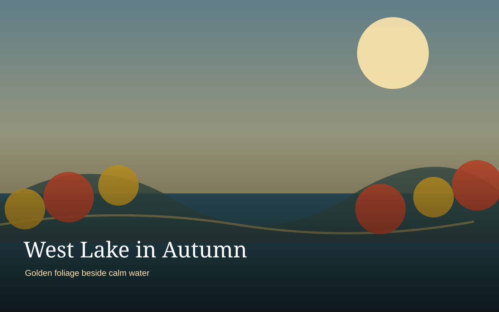
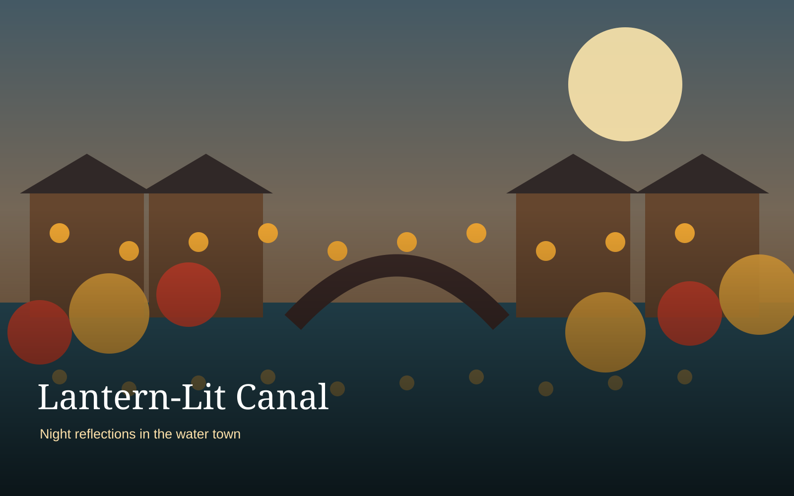
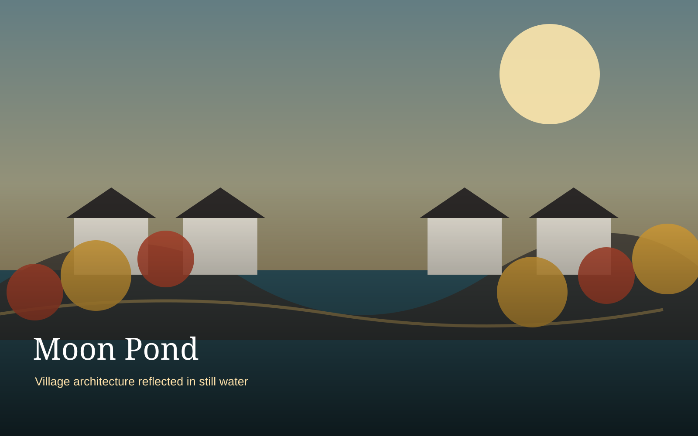

Seasonal Story
Autumn is the core theme, especially around West Lake, Huangshan, and Hongcun.
Shanghai · Hangzhou · Wuzhen · Huangshan · Hongcun
Autumn is the core theme, especially around West Lake, Huangshan, and Hongcun.
The route stays within Eastern China and uses rail and private transfers efficiently.
Hotel changes are limited to those that materially improve the experience.

Shanghai begins the trip with easy logistics, excellent dining, and a mix of historic and modern cityscapes. Three nights provide enough time to recover from the flight without rushing.

Hangzhou is the romantic heart of the itinerary. The pace slows around West Lake before moving into temple landscapes and Longjing tea country.

Wuzhen is included as an overnight stop rather than a rushed day trip. The best atmosphere comes after day visitors leave and again early the next morning.

Huangshan is the scenic centerpiece. The itinerary protects enough time for changing weather, a mountain overnight, sunset, and an optional sunrise.
Hongcun provides the human-scale cultural counterpoint to Huangshan. The goal is not to rush through every lane but to spend time around the ponds, courtyards, and village edges.